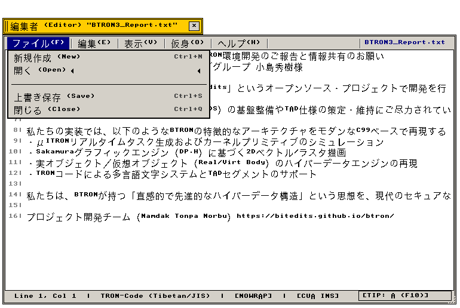
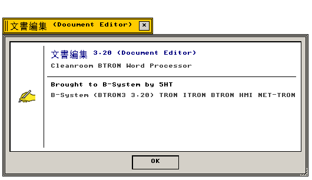

文書編集 (Editor)
TAD 多言語文書編集 · 図形・実身インライン埋め込み · TIP Mozc 連携
TRON Application Databox (TAD) 準拠の標準マルチメディアリッチテキストエディタ
"Standard multilingual rich-text editor conforming to the TRON Application Databox (TAD) format."
← アプリケーション一覧 (Applications Index)
文書編集（Editor） — 文書編集（Editor）は、TRON多言語文字コード、インライン図形プリミティブ、仮身埋め込みリンクを単一ドキュメント内でシームレスに混在編集できるBTRON3標準文書プロセッサです。
"Full-featured TAD word processor integrating multi-plane TRON typography, embedded vector figures, and inline Virtual Objects."
画面プレビュー (Screen Preview)

実機描画フレームバッファより自動抽出された基本文章編集 T-Editor (ファイルメニュー展開・本文テキスト表示)

実機描画フレームバッファより自動抽出された透過バージョン情報ダイアログ (About Editor)
概要 (Overview)
文書編集（Editor）は、TRON多言語文字コード、インライン図形プリミティブ、仮身埋め込みリンクを単一ドキュメント内でシームレスに混在編集できるBTRON3標準文書プロセッサです。
"Full-featured TAD word processor integrating multi-plane TRON typography, embedded vector figures, and inline Virtual Objects."
1. メニュー構造と操作体系 (Menu Architecture & Operations)
Editor が提供する標準メニューバー構造および操作体系の仕様。
"Standard menu bar hierarchy and interactive command bindings."
| メニュー項目 |
機能説明 (Functional Description) |
技術仕様・C99実装 (C99 Architecture) |
| ファイル (File) |
開く (Open ▶ ドキュメントスキャン)、保存、TADエクスポート、印刷 |
モーダルファイルピッカー排除設計 |
| 編集 (Edit) |
元に戻す、切り取り、コピー、貼り付け、検索・置換 |
クリップボード実身連携 |
| 挿入 (Insert) |
仮身リンク埋め込み、図形セグメント、チベット語テキスト、日付スタンプ |
TAD_SEGMENT_FUSEN |
| 書式 (Format) |
明朝/ゴシック書体指定、ポイントサイズ、行間ピッチ、ルーラー設定 |
TS_TRULER, TS_TFONT |
2. 機能仕様とアーキテクチャ (Functional & Architecture Specifications)
Editor アプリケーションの内部構造、データモデル、およびシステムコール仕様。
"Internal architectural components, memory models, and system call bindings."
| コンポーネント・機能名 |
動作概要と機能仕様 (Functional Specification) |
技術仕様・C99構造体 (C99 Implementation) |
| モーダルレス開くメニュー |
『開く ▶』カスケードメニューからリポジトリ内の文書を直接選択。ファイル選択ダイアログの割り込みを完全排除。 |
assets/texts/ スキャンパイプライン |
| TIP Mozc インライン変換 |
日本語かな漢字変換およびチベット語Wylie変換の未確定文字列を下線付きでキャレット位置に直接描画。 |
EV_TIP_CNV, EV_TIP_OUT |
| TADセグメント構造 |
テキストページ付箋（@ts_tpage）、フォント付箋（@ts_tfont）、仮身付箋（@ts_vobj）の完全バイナリ直列化。 |
BTRON3 SPEC 3.20 準拠 |
| About ダイアログ仕様 |
共通 Nano About Box（420×170px、32×32アイコン、5HT著作権表示、Escapeキー閉鎖）。 |
app_menu_create_about_dialog |
関連コンポーネント (Related Components)